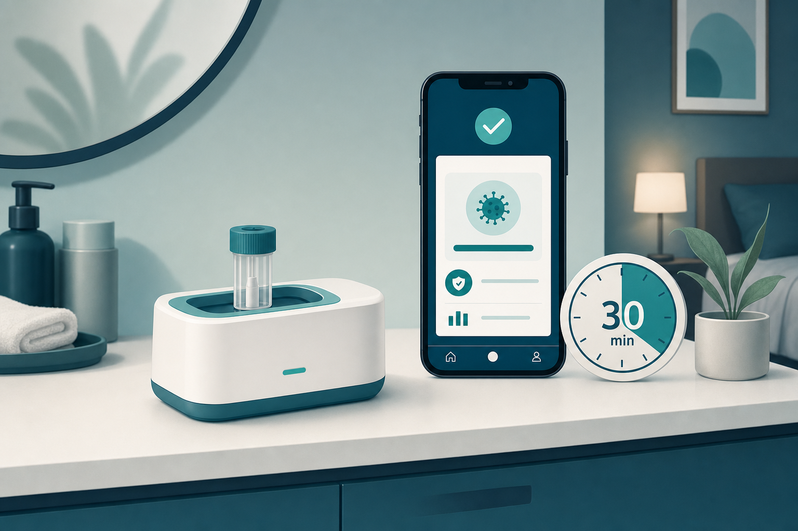
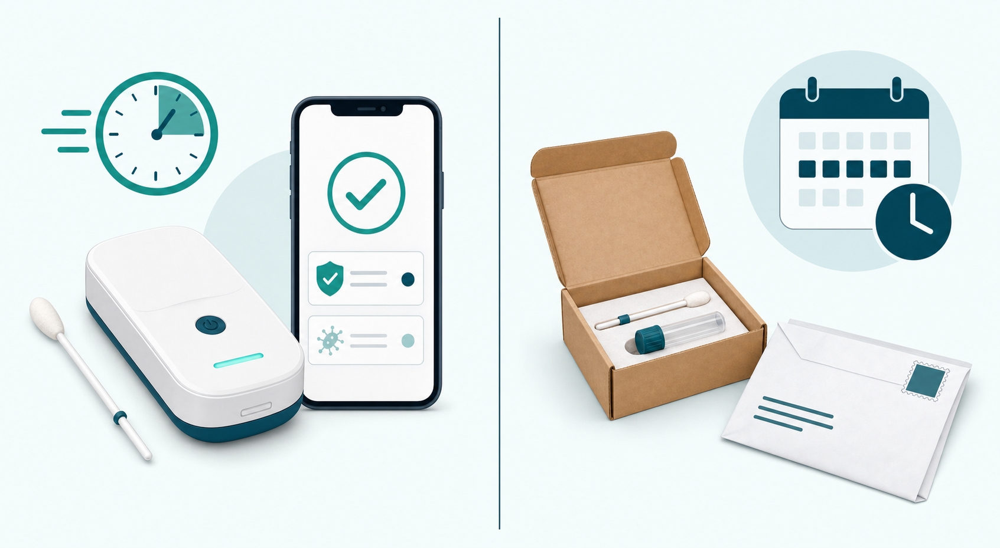

Key Takeaways
- In March 2025, the FDA granted marketing authorization to the Visby Medical Women's Sexual Health Test — the first at-home PCR test for chlamydia, gonorrhea, and trichomoniasis available without a prescription.[1]
- Clinical performance is high: 97.2% sensitivity for chlamydia, 100% for gonorrhea, and 97.8% for trichomoniasis based on the FDA's review of self-collected vaginal swabs.[1]
- Results are available on the Visby app in approximately 30 minutes — compared with 5 to 7 days for mail-in alternatives.[2]
- As of 2026, the test is sold for $149.99 through Visby direct, Quest Diagnostics, Labcorp OnDemand, and Optum Now.[3]
- A positive result still requires follow-up with a clinician — either via telehealth or in-person care — because some treatments (like the ceftriaxone injection for gonorrhea) cannot be given remotely.[4]

A New Category of At-Home Testing
Sexual health screening has historically required a clinic visit, an awkward conversation, and sometimes a long wait for lab results. For many people, that combination is enough to delay testing — or skip it entirely.
At-home STI testing has existed for years. Until recently, most options were mail-in kits: you self-collect a sample, ship it to a centralized lab, and wait 5 to 7 days for a result to arrive in an app or email.[2] That model works, but the waiting period is real, and the chain of custody adds opportunities for delay.
That changed in March 2025, when the FDA granted marketing authorization to the Visby Medical Women's Sexual Health Test — the first at-home test for chlamydia, gonorrhea, and trichomoniasis available without a prescription.[1] Unlike mail-in kits, the Visby device runs PCR locally and returns results to your phone in about 30 minutes.
This is the first article in a new TeleDirectMD content track focused on at-home testing. The goal is straightforward: review what these tests actually do, what the published evidence says, when they make sense, and what to do with the results. Disclosure: this is an editorial review, not sponsored content. There are no affiliate relationships with Visby or any other test brand mentioned here.
What This Test Is
The Visby Women's Sexual Health Test is a self-contained, single-use, palm-sized PCR (polymerase chain reaction) device. It detects DNA from three pathogens: Chlamydia trachomatis, Neisseria gonorrhoeae, and Trichomonas vaginalis.[1]
You collect a sample yourself using a vaginal swab, insert it into the device, and the unit pairs with the Visby Medical App on your smartphone. The app displays your results in about 30 minutes.[7] As of 2026, the test is validated only for female anatomy; mail-in alternatives remain the option for male users.
These three pathogens are the most common curable STIs in the United States. Per the CDC, chlamydia is the most reported notifiable condition in the country, with roughly 1.6 million annual cases, and trichomoniasis affects an estimated 2.6 million Americans at any given time.[4] Many of those infections are asymptomatic, which is part of why the CDC recommends annual screening for sexually active women under 25.
The FDA reviewed the device through the De Novo premarket pathway, which applies to low-to-moderate risk devices of a new type.[7] That authorization does more than clear a single product — it establishes a new regulatory classification, so future at-home STI PCR devices can be reviewed under the standard 510(k) pathway.
The Evidence
The FDA's review of the Visby device included clinical performance data from self-collected samples in real users. The numbers across the three pathogens are summarized below.[1]
| Pathogen | Sensitivity (positive correctly identified) | Specificity (negative correctly identified) |
|---|---|---|
| Chlamydia trachomatis | 97.2% | 98.8% |
| Neisseria gonorrhoeae | 100% | 99.1% |
| Trichomonas vaginalis | 97.8% | 98.5% |
Independent validation has reached similar conclusions. A January 2025 paper in Open Forum Infectious Diseases reported sensitivity of at least 95% and specificity of at least 98% across all three pathogens, with lay users successfully operating the device. The authors concluded that performance was "equivalent to results from high complexity assays conducted in centralized laboratories."[2]
A June 2025 study in Diagnostics — the PROVE study — evaluated 558 paired samples from adolescent girls and young women, comparing the Visby device with nurse-collected GeneXpert testing. Visby exhibited the highest sensitivity among the comparator point-of-care tests in that population (78.8% versus 0–9.7% for other rapid tests), with 100% accuracy on positive results during longitudinal follow-up.[5]
The plain-language translation: in real-world testing, when Visby says you have an infection, that result is almost always right. When it says you don't, that's also almost always right — though no test is perfect.
Important context on the numbers: the lower sensitivity figure in the PROVE adolescent cohort (78.8%) reflects a specific population and comparator design. The FDA-reviewed performance figures used standardized comparator panels and represent typical user performance. Current evidence shows the device performs at the level of centralized PCR for the populations and use cases it was authorized for.[6]

Buyer's Guide
Faster isn't automatically better. Whether the Visby test is the right purchase depends on what you actually need it to do. The framing below is intentionally practical — what works well, what doesn't, and where to look elsewhere.
When the Visby test is a good fit
- You may have been exposed to chlamydia, gonorrhea, or trichomoniasis (recent unprotected sex, a partner with a known STI, condom failure).
- You have symptoms such as abnormal discharge, pelvic pain, bleeding between periods, or painful urination.
- You're a sexually active woman under 25 due for the annual screening the CDC recommends.[4]
- You value privacy and speed over broader panel coverage.
- You want to confirm an infection before scheduling clinician follow-up.
When you should consider alternatives
- You need to screen for HIV, syphilis, hepatitis, or HPV. Visby doesn't test for these. Mail-in panels from Everlywell, LetsGetChecked, or in-person testing cover those pathogens.
- You are male. The Visby test is currently validated only for female anatomy. Mail-in alternatives (Everlywell, LetsGetChecked, myLAB Box) accept male samples.
- Cost is a major factor. Mail-in tests are often comparable or cheaper for similar coverage, particularly if you can wait several days.
- You have severe symptoms — fever, severe pelvic pain, or signs of pelvic inflammatory disease. See a clinician in person rather than wait for any home test.
How Visby compares with mail-in alternatives
| Test | Pathogens Detected | Method | Time to Results | Cost (~$) |
|---|---|---|---|---|
| Visby Women's Sexual Health Test | CT, NG, TV | At-home PCR device | 30 min | $149.99 |
| Everlywell STI Test | CT, NG, TV, HIV, syphilis, hep C | Mail-in to lab | 5–7 days | $169–249 |
| LetsGetChecked Standard STD | CT, NG, syphilis, HIV, trich | Mail-in to lab | 2–5 days | $149–179 |
| Nurx Full Control STI | CT, NG, syphilis, HIV, trich | Mail-in to lab | 5–7 days | $190+ |
| myLAB Box | Up to 14 STIs | Mail-in to lab | 2–5 days | $79–369 |
Red flags to avoid when buying any home STI test
- Tests labeled "research grade" or "for laboratory use only." These are not FDA-authorized for consumer use.
- Brands without published clinical performance data.
- Listings claiming to detect HIV or syphilis from saliva or other non-blood samples — those pathogens require a blood sample.
- Anything substantially cheaper than the established market price. Be cautious of unbranded or third-party marketplace listings.
Where to buy Visby
The test is available through four primary channels as of 2026:[3][8]
- Visby Medical direct (visby.com)
- Quest Diagnostics consumer site (questhealth.com) — added November 2025
- Labcorp OnDemand — January 2026
- Optum Now
Reading Your Result
Negative result
A negative result means the pathogen wasn't detected in your sample. False negatives are uncommon but possible, particularly with self-collection technique issues or very early infections. If you have symptoms despite a negative result, you should still see a clinician.
A negative result for these three pathogens does not mean negative for other STIs. HIV, syphilis, herpes, hepatitis, and HPV are not part of this panel and require separate screening.
Positive result
A positive result means pathogen DNA was detected. The data tells us the test is highly accurate, but treatment still needs to come from a clinician who can confirm the result is consistent with your symptoms and history, and prescribe the right medication at the right dose.
Do not start any leftover or borrowed antibiotics. The CDC recommends specific drugs and doses for each pathogen, and using the wrong one can fail to clear the infection or contribute to antibiotic resistance.[4]
Notify recent sexual partners so they can get tested and treated. CDC guidance recommends partner notification for any sexual contacts within the past 60 days for chlamydia and gonorrhea.[4]
Next Steps After a Positive Result
A positive test does not mean you treat yourself. You need a clinician to confirm the result, prescribe the correct medication, and address partner treatment and follow-up testing. Two paths get you there, and both are equally valid.
Telehealth visit
- Convenient and fast — often same-day.
- Works well for chlamydia, which is treated with oral doxycycline 100 mg twice daily for 7 days.[4]
- Works well for trichomoniasis, which is treated with oral metronidazole.[4]
- Gonorrhea is a partial exception. First-line treatment is ceftriaxone 500 mg IM as a single injection.[4] A telehealth clinician can confirm the diagnosis and coordinate a local injection — typically at a pharmacy, urgent care, or clinic — but the shot itself has to happen in person.
- Visby's app includes a free same-day telehealth consult after a positive result, delivered by a third-party provider.[3]
In-person visit
- Your primary care physician's office.
- Urgent care.
- A local sexual health clinic.
- Planned Parenthood, which often offers low-cost or sliding-scale fees.
- Required for gonorrhea treatment (ceftriaxone IM) regardless of where the test was performed.
- Useful if you also want a pelvic exam, additional testing, or in-person counseling.
Neither option is "better" — they serve different preferences and clinical needs. What matters is that treatment happens promptly, partners are notified, and you complete the full course.
When the Test Isn't Enough
A home test is a screening tool, not a substitute for a clinical evaluation. You should choose in-person care over a home test — or in addition to it — when any of the following apply:
- Severe pelvic pain or fever, which can suggest pelvic inflammatory disease
- Visible ulcers or sores, which can suggest HSV, syphilis, or chancroid
- You're pregnant or trying to conceive
- You've recently been sexually assaulted — urgent care, an emergency department, or a specialized clinic is the right starting point
- You're immunocompromised
- Symptoms persist after a negative home test
- You need screening for HIV, syphilis, hepatitis, or HPV
- You have a male partner whose status you want to confirm (Visby is not yet validated for male anatomy)
The Bottom Line
The Visby Women's Sexual Health Test is a reasonable, evidence-supported option for women who want fast, private testing for chlamydia, gonorrhea, and trichomoniasis. The FDA-reviewed performance figures are strong, the published literature is consistent with those figures, and three major distributors carry the product.[1][2][3]
It is not a replacement for sexual health care. It is a tool that gets you to a clinician faster, with information in hand. A positive result still needs clinician follow-up — by telehealth or in person — to get the right treatment. A negative result with persistent symptoms also needs clinician follow-up, because no single test rules out everything.
References
- U.S. Food and Drug Administration. "FDA Grants Marketing Authorization of First Home Test for Chlamydia, Gonorrhea, and Trichomoniasis." March 28, 2025. fda.gov
- Klausner JD, et al. "Performance of a rapid, point-of-care PCR test for the detection of Chlamydia trachomatis, Neisseria gonorrhoeae, and Trichomonas vaginalis in self-collected vaginal samples." Open Forum Infectious Diseases. January 2025. pmc.ncbi.nlm.nih.gov
- Visby Medical. "Visby Engages Quest and Labcorp to Broaden Consumer Access to First At-Home FDA-Authorized PCR Test for STIs." visby.com
- Centers for Disease Control and Prevention. "Sexually Transmitted Infections Treatment Guidelines." cdc.gov
- PROVE study investigators. "Validation of a rapid PCR point-of-care platform for STI detection in adolescent girls and young women." Diagnostics. June 2025. pmc.ncbi.nlm.nih.gov
- National Institute of Allergy and Infectious Diseases. "Point-of-Care Diagnostics for Common Sexually Transmitted Infections." niaid.nih.gov
- U.S. Food and Drug Administration. "De Novo Classification Decision Summary — DEN240020 (Visby Medical Women's Sexual Health Test)." accessdata.fda.gov
- Optum Now. "Visby Women's Sexual Health Test product listing." now.optum.com